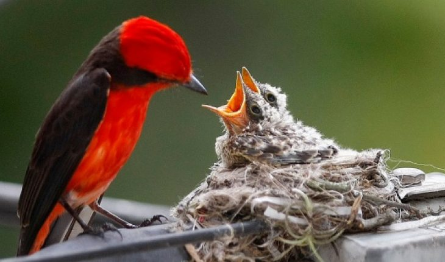

Los pájaros cuando se encuentran en libertad van a tener una alimentación bastante variada, que se va a basar sobre todo en semillas que vaya encontrando por el suelo, frutos de los árboles o arbustos, pero también necesitarán proteínas, por lo que la conseguirán de mano de insectos como grillos, hormigas, saltamontes, pero también se alimentarán de gusanos u mariposas. Cuando van a cazar lo hacen tanto en vuelo como en tierra firme, utilizando sus patas para aguantar a la presa, mientras que dan picotazos para matarla y alimentarse.
